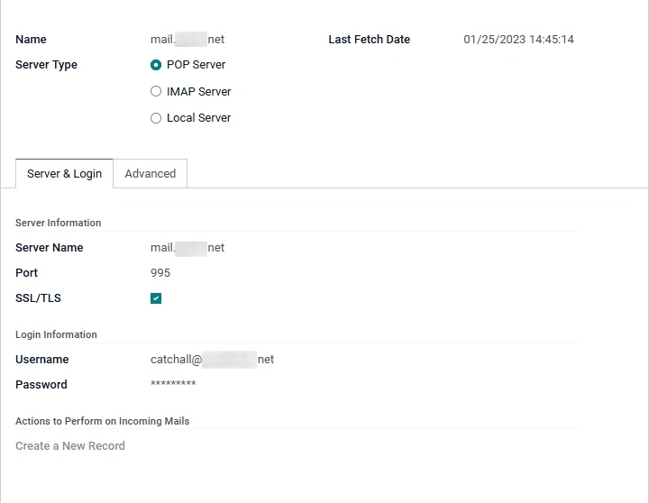

Send and receive emails in Odoo with an email server¶
Odoo Online or Odoo.sh users¶
Since Odoo sets up its own mail servers for the database, outgoing and incoming emails already work out-of-the-box. So for Odoo Online and Odoo.sh customers, nothing needs to be configured!
Unless an external mail server is required to send large batches of mass emails, simply use the standard online Odoo database normally since it has already been pre-configured to send email.
Important
The Odoo server is subject to a daily email limit to prevent abuse. The default limit is 200 emails sent per day for databases with an Enterprise subscription. This limit can be increased under certain conditions. See the FAQ or contact support for more information.
Scope of this documentation¶
This document is mainly dedicated to Odoo on-premise databases that do not benefit from an out-of-the-box solution to send and receive emails in Odoo, unlike Odoo Online and Odoo.sh. Incoming and outgoing servers must be configured for on-premise databases.
The following sections below contain information on how to integrate an external email server with Odoo.
Warning
If no one in the company is employed to manage email servers, Odoo Online and Odoo.sh are strongly recommended. In these Odoo hosting types email sending and receiving works instantly and is monitored by professionals. Nevertheless, a company can use their own email server if they want to manage the email server’s reputation themselves. For more information see Configure DNS records to send emails in Odoo
Default notifications system¶
Documents in Odoo (such as a CRM opportunity, a sales order, an invoice, etc.) have a discussion thread, called chatter.
When a database user posts a message in the chatter, this message is sent by email to the followers of the document as a notification (except to the sender). If a follower replies to the message, the reply updates the chatter, and Odoo relays another reply to the followers as a notification. Messages sent back to the chatter from users or external users will appear in the chatter from their respective email, or as the name listed in their Contacts record.
These notifications are sent using a default from address. For more information see Use a default email address.
Manage outbound messages¶
As a system administrator, go to in Odoo, and enable the Custom Email Servers option. Then, click Save. Next, click Outgoing Email Servers and click Create to create a new outgoing mail server record in Odoo. Reference the SMTP data of the external email server. Once all the information has been filled out, click Test Connection.
See also
Note
Ensuring the outgoing domain has SPF, DKIM and DMARC set up on the DNS will improve deliverability. For more information see Configure DNS records to send emails in Odoo.
Port restriction¶
Note that port 25 is blocked for security reasons on the Odoo Online and Odoo.sh platforms. Try using ports 465, 587, or 2525 instead.
Use a default “From” email address¶
Sometimes, an email’s “From” (outgoing) address can belong to a different domain, and that can be a problem.
For example, if a customer with the email address mary@customer.example.com responds to a
message, Odoo will try to redistribute that same email to the other subscribers in the thread.
However, if the domain customer.example.com forbids that kind of usage for security, the email
that Odoo is trying to redistribute would get rejected by some recipients’ email servers.
To avoid that problem, Odoo sends all emails using a “From” address from the same authorized domain.
Access the System Parameters by activating developer mode and going to menu.
To force the email address from which emails are sent, a combination of the following keys needs to be set in the system parameters of the database:
mail.default.from: accepts the local part or a complete email address as valuemail.default.from_filter: accepts a domain name or a full email address as value
Note
The mail.default.from_filter works only for odoo-bin configurations or the default Odoo email
server, otherwise this parameter can be set using the from_filter field on ir.mail_server.
The field can be a domain name or an entire email address, or it can remain empty. If the sender’s
email address does not match this set filter, then the email will be encapsulated using a
combination of the two system parameters: mail.default.from and mail.catchall.domain.
Example
In the following example, the from email address is replaced with the combination of the the two
system parameters (mail.default.from and mail.catchall.domain). This is the defaultnotifications configuration in Odoo: “Admin” <admin@example.com> => “Admin”
<notifications@mycompany.com>.
In other words if the email address of the author does not match mail.default.from_filter, the
email address is replaced by mail.default.from (if it contains a full email address) or a
combination of mail.default.from and mail.catchall.domain.
If the from_filter contains a full email address, and if the mail.default.from is the same as
this address, then all of the email addresses that are different from mail.default.from will be
encapsulated in mail.default.from.
Utilizing the “From” filter on an outgoing email server¶
The FROM Filtering field allows for the use of a specific outgoing email server depending on the From email address or domain that Odoo is sending on behalf of. This setting can be used to improve the deliverability or sending success rate of emails sent from the database. Setting the FROM Filtering field can also be used to send from different domains in a multi-company environment. Access this field in Odoo by navigating to .

When an email is sent from Odoo while the FROM Filtering field is set, an email server is chosen in the following sequence:
First, Odoo searches for an email server that has the same FROM Filtering value as the From value (email address) defined in the outgoing email. For example, if the From value (email address) is
test@example.com, only the email servers that have the FROM Filtering value equal totest@example.comare returned.However, if no email servers are found that use the From value, then Odoo searches for an email server that has the same domain as the From value (email address) defined in the outgoing email. For example, if the From email address is
test@example.com, only the email servers that have the FROM Filtering value equal toexample.comare returned.
If no email servers are found after checking for the domain, then Odoo returns all email servers that do not have any FROM Filtering value(s) set.
Should this query return no results, then Odoo performs a search for an email server using the
system parameter: mail.default.from. First, the email address listed attempts to match an email
server, and then the domain attempts to find a match. If no email server is found, Odoo returns the
first outgoing email server (sorted by priority).
Note
If several email servers are found, then Odoo uses the first one according to its priority. For
example, if there are two email servers, one with a priority of 10 and the other with a
priority of 20, then the email server with a priority of 10 is used first.
Set up different dedicated servers for transactional and mass emails¶
In Odoo a separate email server can be used for transactional emails and mass mailings. Example: Use Postmark or SendinBlue for transactional emails, and Amazon SES, Mailgun, Sendgrid or Mailjet for mass mailings.
Important
A default outgoing email server is already configured. Do not create an alternative one unless a specific external outgoing email server is needed for technical reasons.
To do this, first activate the developer mode, and then go to email servers. There, create two outgoing email server settings; one for the transactional emails and one for the mass mailing server. Make sure to give priority to the transactional server over the mass mailing server by providing a lower priority number for the transactional email server.
Now, go to and enable Dedicated Server. Choose the appropriate email server. With these settings, Odoo uses the server with the lower priority for transactional emails, and the server here selected for mass mails. Note that in this case, the domain’s Sender Policy Framework (SPF) records must be set to include both transactional and mass mail servers.
Manage inbound messages¶
Odoo relies on generic email aliases to fetch incoming messages.
Reply messages of messages sent from Odoo are routed to their original discussion thread (and to the inbox of all its followers) by the alias of the model if there is any or by the catchall alias (catchall@). Replies to messages of models that do not have a custom alias will use the catchall alias (
catchall@mycompany.odoo.com). The catchall address, however, does not have another action attached to it like other aliases might, it is only used to collect replies.Bounced messages are used as a Return-Path. One example this is especially useful for is in Odoo Email Marketing. In this case bounces are opt-out based on if the email bounced too many times (5) in the last month and the bounces are separated by one week. This is done to avoid blacklisting someone because of a mail server error. If these circumstances are met then the email is considered invalid and is blacklisted. A log note is added on the contact under Blacklisted Email Addresses on the Email Marketing Configuration Menu.
Messages that bounce in the chatter (outside of Email Marketing) will populate a red envelope indicating the failed delivery. This can be helpful to know that a Sales Order or an Invoice did not reach its final destination.
Original messages: several business objects have their own alias to create new records in Odoo from incoming emails:
Sales channel (to create Leads or Opportunities in Odoo CRM)
Support channel (to create Tickets in Odoo Helpdesk)
Projects (to create new Tasks in Odoo Project)
Job positions (to create Applicants in Odoo Recruitment)
Depending on the mail server, there might be several methods to fetch emails. The easiest and most recommended method is to manage one email address per Odoo alias in the mail server.
Create the corresponding email addresses in the mail server (catchall@, bounce@, sales@, etc.).
Set the Alias Domain name in . Changing the Alias Domain will change the catchall’s domain for the database.
If the database’s hosting type is Odoo on-premise, create an Incoming Mail Server in Odoo for each alias. To create a new incoming server go to: Fill out the form according to the email provider’s settings. Leave the Actions to Perform on Incoming Mails field blank. Once all the information has been filled out, click on TEST & CONFIRM.
If the database’s hosting type is Odoo Online or Odoo.sh, redirecting or forwarding incoming messages to Odoo’s domain name instead of the external email server is recommended. That way, incoming messages can be received without delay. Redirections for all email addresses should be set to Odoo’s domain name in the email server (e.g.
catchall@mydomain.exttocatchall@mycompany.odoo.com).
All the aliases are customizable in Odoo. Object aliases can be edited from their respective configuration view by navigating to .
To edit catchall and bounce aliases, first activate the developer mode.
Then, go to to
customize the aliases (mail.catchall.alias & mail.bounce.alias). These types of changes should
be completed prior to the database going live. If a customer replies after a change is made then the
system will not recognize the old alias, and the reply will not be received.
By default, inbound messages are fetched every 5 minutes for on-premise databases.
Note
This value can be changed in developer mode. Go to and look for Mail: Fetchmail Service.
System parameters that prevent feedback loops¶
There are two system parameters that help prevent email loops from occurring in Odoo. These parameters were introduced in Odoo 16 to prevent aliases from creating too many records and to prevent feedback loops on the catchall reply-to email address. They are present in database but not in the System Parameters. To override the following defaults they need to be added in.
The two system parameters are as follows:
mail.gateway.loop.minutes(120 minutes by default)mail.gateway.loop.threshold(20 by default)
Add these fields in Odoo by first enabling developer mode, and then navigating to . Change the value of these parameters, as needed.
When an email is received in the Odoo database on the catchall email address or on any alias, Odoo
looks at the mail received for the given period of time defined in the system parameter
mail.gateway.loop.minutes. If the received email was sent to an alias then Odoo will reference the
mail.gateway.loop.threshold system parameter and determine the value as the number of records this
alias is allowed to create in the given period of time (value of mail.gateway.loop.minutes).
In addition, when email is received to the catchall email address, Odoo will reference the emails
received to the database during the set period of time (as stated by the value in the system
parameter: mail.gateway.loop.minutes). Odoo will then determine whether any of the emails
received match that of the email(s) being received during the specified time-frame, and will prevent
a feedback loop from occurring if a duplicate email is detected.
Allow alias domain system parameter¶
Incoming aliases are set in the Odoo database to create records by receiving incoming emails. To view aliases set in the Odoo database, first activate the developer mode. Then, go to .
The following system parameter, mail.catchall.domain.allowed, set with allowed alias domain
values, separated by commas, filters out correctly addressed emails to aliases. Setting the
domain(s) for which the alias can create a ticket, lead, opportunity, etc., eliminates false
positives where email addresses with only the prefix alias (not the domain) are present.
In some instances, matches have been made in the Odoo database when an email is received with the same alias prefix and a different domain on the incoming email address. This is true in the sender, recipient, and CC email addresses of an incoming email.
Example
When Odoo receives emails that have the name commercial prefix alias in the sender, recipient,
or CC email address(es) (e.g. commercial@gmail.com, commercial@odoo.net),
the database falsely treats the email as the full commercial alias (with a different domain),
and therefore, creates a ticket/lead/opportunity/etc.
To add the mail.catchall.domain.allowed system parameter, first, activate the developer mode. Then, go to . Click Create. Then, type in mail.catchall.domain.allowed for the
Key field.
Next, for the Value field, add the domain(s) separated by comma(s) (if plural domains). Manually Save, and the system parameter takes immediate effect.